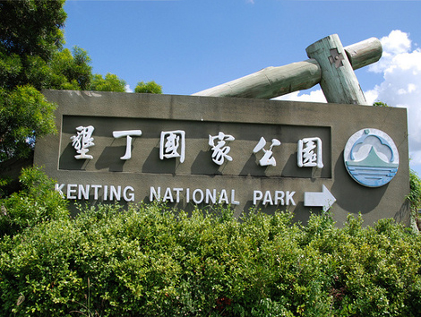

墾丁國家公園

「墾丁」本義為「開墾的壯丁」。清領時期光緒三年（1877年）官方設置招墾局，募得粵籍客家人在此搭寮墾荒，得名為墾丁藔。《恆春縣志》亦記載墾丁莊為「客番雜居」（客家人與原住民雜居）的村落；另外亦有同治年間開墾之說法。墾丁寮舊址在大尖石山山麓，本只是個小地名，今日一般指墾丁路夜市（仍在大尖石山下）。由於後來成為國家公園名，亦常泛指整個恆春半島觀光地區。
恆春半島成立國家公園之計畫在日治時期即有學者提倡。在臺灣最早的大屯、新高阿里山、次高太魯閣三處國立公園成立之前，1936年4月臺北帝國大學地質學教授早坂一郎在其論文《臺灣の國立公園》中，認為既存的新高阿里山、次高太魯閣國立公園皆為大同小異的山岳地帶，主張應於大日本帝國唯一的熱帶地恆春半島增設國立公園，範圍為臺東與屏東一線以南全部區域、包括大武山等高山。同年2月5日《臺灣日日新報》的專欄中臺北帝國大學幾任教授亦附和之，認為大武山至恆春方面由姥姑石形成的丘陵為「一種獨特的景觀與風致」，另外亦有四重溪溫泉與琉球嶼，成立「相當大規模的國立公園並非不可能」。
現今之墾丁國家公園於1982年9月1日公告計畫，但範圍僅恆春鎮及附近海域、不含高山。稍後1984年1月1日成立管理處，為臺灣戰後第一個國家公園。大武山附近區域則於1988年1月13日成立大武山自然保留區、琉球嶼則劃入大鵬灣國家風景區。
恆春半島成立國家公園之計畫在日治時期即有學者提倡。在臺灣最早的大屯、新高阿里山、次高太魯閣三處國立公園成立之前，1936年4月臺北帝國大學地質學教授早坂一郎在其論文《臺灣の國立公園》中，認為既存的新高阿里山、次高太魯閣國立公園皆為大同小異的山岳地帶，主張應於大日本帝國唯一的熱帶地恆春半島增設國立公園，範圍為臺東與屏東一線以南全部區域、包括大武山等高山。同年2月5日《臺灣日日新報》的專欄中臺北帝國大學幾任教授亦附和之，認為大武山至恆春方面由姥姑石形成的丘陵為「一種獨特的景觀與風致」，另外亦有四重溪溫泉與琉球嶼，成立「相當大規模的國立公園並非不可能」。
現今之墾丁國家公園於1982年9月1日公告計畫，但範圍僅恆春鎮及附近海域、不含高山。稍後1984年1月1日成立管理處，為臺灣戰後第一個國家公園。大武山附近區域則於1988年1月13日成立大武山自然保留區、琉球嶼則劃入大鵬灣國家風景區。